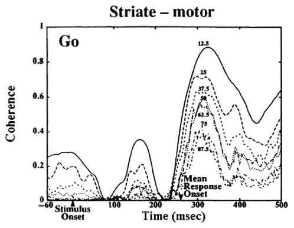
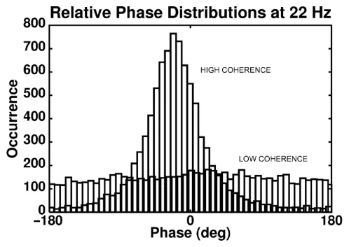
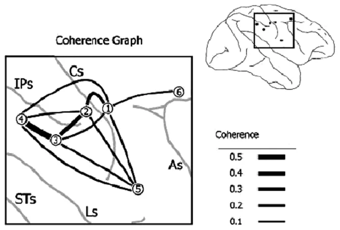

Phần I · Bài 3 — Sự hình thành trạng thái nhận thức thần kinh toàn cục (Bressler)
của điều biến pha của gói sóng chưa được phát hiện là có tương quan với tri giác hoặc hành vi, nhưng là một chỉ báo hữu ích về phạm vi không gian của gói sóng. Vì phạm vi không gian của các miền kết hợp có thể vượt quá kích thước của các vùng cảm giác sơ cấp [28, 30, 33], vẫn còn là một câu hỏi mở về mức độ mà các miền kết hợp bị giới hạn bởi ranh giới của các vùng vỏ não được xác định về mặt giải phẫu.
Ngoại suy từ những cân nhắc này, thật hợp lý khi suy luận rằng mỗi vùng của vỏ não, dù là vùng cảm giác hay phi cảm giác, đều tạo ra một chuỗi các gói sóng trong suốt hành vi nhận thức bình thường, và các vùng kết nối với nhau đồng thời tạo ra các gói sóng có thể dẫn đến việc chúng cùng nhau trải qua các chuyển tiếp trạng thái cục bộ. Sự tạo thành gói sóng có cấu trúc không gian phát sinh từ mạch điện cục bộ trong mỗi vùng vỏ não. Mẫu AM không gian của gói sóng được tạo ra trong một vùng phụ thuộc vào sự tương tác của các đầu vào xung từ các vùng khác với ma trận khớp thần kinh cục bộ đóng vai trò như một bộ nhớ liên kết được hình thành bởi học tập Hebbian [1, 53]. Phạm vi không gian của gói sóng bị giới hạn bởi các yếu tố như sự phân bố không gian của các kết nối kích thích lẫn nhau và của các nhánh tận cùng của các con đường chiếu sợi trục đi đến.
Từ góc độ này, việc tạo ra và truyền tải hoạt động có cấu trúc không gian giữa các vùng là trung tâm đối với sự giao tiếp vỏ não. Xét việc tính kết nối giải phẫu của vỏ não phần lớn là hai chiều ở cấp độ quần thể [24], các vùng thường nhận phản hồi từ chính những vùng mà chúng truyền tới, và theo nghĩa này quá trình xử lý vỏ não được coi là “tái nhập” (reentrant) [79]. Bằng cách cung cấp các đầu vào phản hồi cho các phần tử mạch trong các tập hợp vùng vỏ não tương tác, các tương tác tái nhập ràng buộc lẫn nhau các mẫu AM không gian của gói sóng do các vùng đó tạo ra.
Trong quá trình này, mỗi vùng vỏ não tạo ra một phân bố không gian của hoạt động xung có mật độ tuân theo mẫu AM không gian của gói sóng của nó. Các mẫu mật độ xung này được truyền giữa các vùng vỏ não qua các con đường sợi liên vùng, một số trong đó có mức độ đặc thù định vị (topographic specificity) nhất định, nhưng nhìn chung có mức độ phân kỳ và hội tụ cao trong sự chiếu của chúng tới các vùng vỏ não khác. Do đó, các gói sóng trải qua các phép biến đổi tích phân không gian khi truyền từ vùng vỏ não này sang vùng vỏ não khác [4]. Mẫu điện thế hậu khớp thần kinh được tạo ra trong một vùng bởi các xung truyền qua các con đường sợi liên vùng còn phụ thuộc hơn nữa vào mẫu độ mạnh truyền dẫn khớp thần kinh tại các đầu tận cùng sợi trục đã được biến đổi bởi học tập Hebbian xuyên vỏ não [36, 63]. Hiệu ứng tổng thể của nhiều tương tác tái nhập giữa các vùng vỏ não là sự ràng buộc lẫn nhau đối với các mẫu AM không gian của các gói sóng mà chúng tạo ra [12].
3 Sự Xuất hiện của Trạng thái Nhận thức Thần kinh Toàn cục
Ở trạng thái thức tỉnh, các vùng vỏ não được phát hiện là tạo ra các gói sóng kéo dài khoảng 100–300 msec, bị ngắt quãng bởi các chuyển tiếp trạng thái phi tuyến [29]. Mỗi khi gói sóng được tái tạo, mẫu AM không gian của nó có thể thay đổi. Mẫu AM không gian của gói sóng có thể được coi như một biểu hiện cho trạng thái hiện tại của chính một vùng nhất định trong mối quan hệ với các vùng khác mà nó đang tương tác. Do đó, thật hợp lý khi giả định rằng, khi các vùng kết nối qua lại trải qua các tương tác tái nhập, các mẫu AM không gian của gói sóng mà chúng tạo ra bị ràng buộc cùng nhau. Trong trường hợp đó, các gói sóng trong các vùng vỏ não kết nối với nhau nhờ vậy có thể trải qua sự ràng buộc mẫu kết hợp với nhau.
Việc đồng tạo ra các gói sóng bởi các vùng vỏ não kết nối với nhau đại diện cho một cơ chế khả dĩ cho việc đánh giá trạng thái cơ thể của vỏ não. Tôi giả thuyết rằng mẫu AM không gian của gói sóng được tạo ra trong mỗi vùng đại diện cho một biểu hiện về sự đóng góp của vùng đó vào đánh giá tổng thể về trạng thái cơ thể của vỏ não. Đóng góp của mỗi vùng nảy sinh từ kho lưu trữ ký ức độc nhất của riêng nó, được hiện thân trong ma trận khớp thần kinh cục bộ của nó, dưới ảnh hưởng của các đầu vào từ các vùng khác mà nó tương tác. Mẫu AM không gian của mỗi vùng có thể được biểu hiện kết hợp với các vùng khác trong các tập hợp vùng vỏ não tương tác khi chúng cùng nhau trải qua các chuyển tiếp trạng thái và đồng tạo ra các gói sóng. Sự ràng buộc mẫu lẫn nhau do các vùng đó thực hiện được kỳ vọng sẽ thúc đẩy sự biểu hiện của các đóng góp nhất quán cho việc đánh giá trạng thái, tạo ra một sự diễn giải “đồng thuận” về bằng chứng sẵn có liên quan đến trạng thái của cơ thể trong bối cảnh tình huống hiện tại của nó [15].
Mặc dù hiện nay vẫn chưa rõ những cơ chế tế bào nào chịu trách nhiệm cho việc biểu hiện các mẫu AM không gian nhất quán trong các vùng vỏ não kết nối với nhau, có bằng chứng cho thấy chúng liên quan đến sự đồng bộ hóa pha (một phần) của hoạt động dao động tần số cao. Bản thân gói sóng là một sự kiện dao động được đồng bộ hóa pha cục bộ, và bằng chứng gợi ý rằng hoạt động dao động tần số cao ở các vùng vỏ não khác nhau trở nên đồng bộ hóa pha liên quan đến trạng thái nhận thức [13, 17, 18, 65, 75, 84]. Sự xuất hiện nhanh chóng của các mẫu quy mô lớn gồm các vị trí vỏ não được đồng bộ hóa pha ở các giai đoạn cụ thể của việc thực hiện nhiệm vụ nhận thức gợi ý rằng việc tạo ra vi trạng thái nhận thức [55] phụ thuộc vào sự phối hợp thoáng qua của các tập hợp vùng cụ thể thông qua sự đồng bộ hóa pha dao động tầm xa [9, 13, 14, 16]. Do đó, nhiều khả năng sự đồng bộ hóa pha không chỉ phục vụ việc phối hợp các quần thể tế bào thần kinh cục bộ trong các gói sóng bên trong các vùng vỏ não, mà còn cả các quần thể ở xa trong các vùng khác nhau.
Một quá trình thần kinh tạo ra sự đồng bộ hóa pha tầm xa của các quần thể tế bào thần kinh trong các vùng vỏ não kết nối với nhau có nhiều đặc điểm hấp dẫn cho việc tạo ra một trạng thái toàn cục của vỏ não đại diện cho sự đánh giá liên tục về trạng thái cơ thể. Thứ nhất, tồn tại khả năng cho cả việc đưa vào và loại trừ thoáng qua các vùng vỏ não khỏi các mạng lưới đồng bộ hóa pha quy mô lớn. Các vùng có gói sóng đạt được sự đồng biểu hiện các mẫu AM nhất quán có thể được liên kết bởi sự đồng bộ hóa pha tầm xa, trong khi các vùng khác có thể bị loại trừ do thiếu sự đồng bộ hóa pha. Hoạt động dao động ở các quần thể vỏ não khác nhau được gọi là “kết hợp” (coherent) khi tồn tại mức độ đồng bộ hóa pha cao giữa chúng, và “thiếu kết hợp” (incoherent) khi mức độ đồng bộ hóa pha thấp (Hình 1). Do một sự trùng hợp về thuật ngữ, thuật ngữ “coherence” (tính nhất quán/kết hợp) cũng đã được sử dụng để chỉ sự thỏa mãn các ràng buộc nhận thức nhất quán [76]. Theo nghĩa thứ hai này, các vùng tạo ra các gói sóng có mẫu AM không gian nhất quán có thể được coi là biểu hiện tính nhất quán nhận thức với nhau, và những vùng có mẫu không nhất quán có thể được coi là biểu hiện sự thiếu nhất quán nhận thức.
Hình 1 Các phân bố pha tương đối giữa các điện thế trường cục bộ được ghi lại từ hai vị trí điện cực đỉnh sau ở khỉ macaque. Tần số 22 Hz, nằm trong dải tần số beta giữa, đại diện cho tần số trung tâm của hoạt động dao động được biểu hiện bởi các quần thể tế bào thần kinh ở cả hai vị trí. Hai phân bố được tính toán từ các khoảng thời gian khác nhau khi con khỉ thực hiện một nhiệm vụ phân biệt mẫu thị giác-vận động. Phân bố thứ nhất, được gắn nhãn “ĐỘ KẾT HỢP CAO” (HIGH COHERENCE), là từ khoảng thời gian trước kích thích khi hoạt động dao động ở 22 Hz được đồng bộ hóa cao độ. Phân bố thứ hai, được gắn nhãn “ĐỘ KẾT HỢP THẤP” (LOW COHERENCE), là từ khoảng thời gian sau kích thích khi sự đồng bộ hóa pha ở 22 Hz rất thấp. Nhìn chung, độ kết hợp cao chỉ ra một phân bố pha tương đối tập trung cao, và độ kết hợp thấp chỉ ra một phân bố tập trung yếu
Lợi ích thứ hai của một quá trình như vậy là khả năng duy trì động lực học phối hợp toàn cục của vỏ não ở trạng thái siêu ổn định [10, 14]. Một hệ thống siêu ổn định gồm các thành phần tương tác bảo toàn được sự cân bằng giữa các trạng thái phối hợp toàn cục của các thành phần và tính độc lập của thành phần. Trong một hệ thống gồm


Hình 2 Sự gia tăng từng đợt trong đồng bộ hóa pha giữa các điện thế trường cục bộ từ các vị trí điện cực ở vùng vỏ não thị giác sơ cấp và vỏ não vận động sơ cấp của khỉ macaque. Đồng bộ hóa pha được đo bằng độ kết hợp (coherence), biến thiên từ 0, biểu thị không có đồng bộ hóa, đến 1, biểu thị đồng bộ hóa hoàn toàn. Điều chỉnh từ [13] các quần thể tế bào thần kinh dao động tương tác trong các vùng vỏ não kết nối với nhau, tính siêu ổn định hàm ý sự cùng tồn tại của khuynh hướng để các quần thể này được phối hợp toàn cục cân bằng bởi khuynh hướng đối kháng để chúng độc lập. Một hệ thống siêu ổn định thể hiện tính gián đoạn trong sự phối hợp: các thành phần có thể luân phiên giữa các giai đoạn phối hợp và không phối hợp [14]. Khái niệm về động lực học phối hợp gián đoạn nhất quán với tính gián đoạn được quan sát thực nghiệm của sự đồng bộ hóa pha tăng cao giữa các quần thể tế bào thần kinh vỏ não phân bố rộng rãi (Hình 2), cũng như các chuyển tiếp trạng thái gián đoạn ngăn cách các gói sóng [29, 32]. Đối với cả hai hiện tượng, tính gián đoạn xảy ra xấp xỉ ở mức 100–300 msec.
4 Hệ quả đối với Nghiên cứu về Nhận thức và Ý thức
Về bản chất, đề xuất được trình bày ở đây là một sự đánh giá trạng thái cơ thể diễn ra trong vỏ não là kết quả của các tương tác giữa những vùng vỏ não kết nối với nhau, trong khi chúng đang nhận các đầu vào từ đồi thị và các cấu trúc dưới vỏ khác truyền tải dữ liệu thô về môi trường bên trong và bên ngoài. Bằng cách mỗi vùng vỏ não thực hiện một đánh giá cục bộ về trạng thái hiện tại của chính nó, nó cung cấp một đánh giá bộ phận về toàn bộ trạng thái của cơ thể. Tùy thuộc vào vị trí của nó trong cấu trúc kết nối quy mô lớn của vỏ não [38, 56], mỗi vùng biểu hiện một khía cạnh khác nhau của trạng thái tổng thể.
Một cơ chế tiềm năng cho việc tạo ra trạng thái nhận thức thần kinh toàn cục, đại diện cho sự đánh giá trạng thái cơ thể, liên quan đến việc tạo ra các gói hoạt động sóng dao động tần số cao trong các vùng vỏ não. Mẫu AM không gian của gói sóng được đề xuất đại diện cho sự biểu hiện trạng thái hiện tại của một vùng trong mối quan hệ với các vùng khác mà nó đang tương tác. Thông qua các tương tác của chúng, các vùng vỏ não gây ra các ảnh hưởng điều biến lên nhau nhằm ràng buộc lẫn nhau sự biểu hiện đó. Các vùng vỏ não tạo ra các gói sóng với tốc độ vài lần mỗi giây [29], mỗi lần tạo thành được khởi xướng bởi một chuyển tiếp trạng thái phi tuyến.
Sự ràng buộc mẫu lẫn nhau có thể dẫn các tập hợp vùng vỏ não tương tác đạt tới các trạng thái đồng thuận thống nhất vốn nhất quán theo các mối quan hệ nhất quán và thiếu nhất quán về mặt nhận thức [76]. Người ta đề xuất rằng các tập hợp như vậy trở nên được phối hợp trong các mạng lưới vỏ não quy mô lớn thông qua sự đồng bộ hóa pha của hoạt động dao động tần số cao. Sự ủng hộ cho ý tưởng này đến từ việc quan sát các mạng lưới vỏ não đồng bộ hóa pha quy mô lớn liên quan đến các chức năng nhận thức khác nhau [9, 65, 66, 75, 82, 84]. Một ví dụ từ vùng cảm giác-vận động của khỉ macaque đang giám sát trạng thái vị trí chi của chúng như một phần của nhiệm vụ thị giác-vận động được hiển thị trong Hình 3.
Tùy thuộc vào vị trí và phạm vi của các vùng liên quan, sự xuất hiện của các trạng thái đồng thuận thống nhất có thể đại diện cho sự đánh giá trạng thái cơ thể dưới các hình thức nhận thức khác nhau [56]. Trong các hệ thống tri giác, những trạng thái này có thể dẫn đến sự nhận biết và nhận diện các thực thể tri giác. Giữa các hệ thống tri giác và vận động, chúng có thể cung cấp sự thích nghi hành vi trong chu trình tri giác-hành động [38]. Thông qua sự tích hợp trên các hệ thống điều hành, chúng có thể thiết lập

Hình 3 Mạng lưới đồng bộ hóa pha trong vỏ não cảm giác-vận động của khỉ macaque. Các đường nối các vị trí điện cực biểu thị độ kết hợp đáng kể trong dải tần số beta. Điều chỉnh từ [17] các bối cảnh nhận thức thần kinh [15] cho phép dự đoán các sự kiện sắp xảy ra và nhận diện các sự kiện đó khi chúng xuất hiện.
Tất nhiên, việc đánh giá trạng thái cơ thể hiếm khi hoàn hảo. Một tính bất định cơ bản tồn tại trong quá trình đánh giá trạng thái của môi trường cảm giác [12] và các hệ thống não bộ. Hơn nữa, dữ liệu cảm giác có thể không đầy đủ, mơ hồ hoặc mâu thuẫn. Những cân nhắc này gợi ý rằng nhiều cụm các vùng vỏ não đồng thuận có thể đồng thời nảy sinh trong vỏ não, đại diện cho các đánh giá cạnh tranh về trạng thái cơ thể, theo cách rất giống với những gì đã được đề xuất cho sự cạnh tranh giữa các thực thể tri giác trong cùng một phương thức [23] và giữa các phương thức [54]. Thông qua sự nhất quán gia tăng của các mẫu AM không gian được biểu hiện, cũng như việc huy động thêm các vùng nhất quán, một số cụm có thể trở nên được thiết lập vững chắc hơn qua các chuyển tiếp trạng thái liên tiếp, trong khi những cụm khác có thể tàn lụi. Các cụm cũng có thể hợp nhất nếu chúng biểu hiện các diễn giải nhất quán về trạng thái cơ thể. Thông qua một quá trình đánh giá lặp đi lặp lại liên tục, người ta kỳ vọng rằng vỏ não có thể đạt được các trạng thái nhận thức thần kinh đại diện cho sự đánh giá nhất quán toàn cục về trạng thái cơ thể.
Khuôn khổ được đề xuất trong chương này nhất quán với các cách tiếp cận động lực học trong khoa học nhận thức vốn tập trung vào sự tiến hóa của trạng thái nhận thức trên thang thời gian dưới một giây [5, 71]. Mẫu AM không gian của một gói sóng trong một vùng vỏ não có thể được biểu diễn như một vectơ trong không gian nhiều chiều [29]. Khi gói sóng của vùng đó trải qua quá trình tạo thành tuần tự, vectơ đi theo một quỹ đạo trong không gian trạng thái, và các tương tác của nó với các vùng khác điều biến quỹ đạo vectơ trạng thái đó. Hơn nữa, các mẫu AM không gian kết hợp của các vùng tương tác cũng có thể được biểu diễn như các vectơ trạng thái trong không gian nhiều chiều. Ở cấp độ trạng thái nhận thức thần kinh toàn cục, một quỹ đạo hệ thống vỏ não được hình dung tương đương với các quỹ đạo không gian trạng thái nhận thức được mô tả trong tài liệu [45, 62, 70, 85].
Việc đánh giá trạng thái cơ thể được đề xuất cũng tương tự như quá trình thẩm định được giả định là làm trung gian cho sự tương tác qua lại giữa các trạng thái nhận thức và cảm xúc [52]. Việc tạo ra các trạng thái nhận thức thần kinh toàn cục trong vỏ não có khả năng gây ra những tác động quan trọng lên các cấu trúc não dưới vỏ với nhiều hệ quả đa dạng [19]. Các cấu trúc dưới vỏ có thể truyền ảnh hưởng ngược trở lại vỏ não bằng các con đường trực tiếp sử dụng chất dẫn truyền thần kinh hoặc neuropeptide [59], cũng như bằng các con đường gián tiếp hơn liên quan đến các hormone tuần hoàn. Một số nghiên cứu đã chứng minh mối liên hệ qua lại giữa trạng thái nhận thức thần kinh và các hormone tuần hoàn [48, 49, 64]. Do đó, quỹ đạo hệ thống vỏ não được mô tả ở trên có khả năng chịu ảnh hưởng bởi một số nguồn ở nơi khác trong não bộ và cơ thể.
Sự gián đoạn của quá trình đánh giá cơ thể được đề xuất có thể chịu trách nhiệm cho nhiều triệu chứng quan sát thấy trong các rối loạn tâm thần kinh. Ngày càng có sự đồng thuận rằng tâm thần phân liệt là một căn bệnh được đặc trưng bởi sự rối loạn các quá trình nhận thức phối hợp [2, 42, 57, 61, 78], và sự gián đoạn này xảy ra do kết quả của sự đồng bộ hóa pha bất thường của hoạt động quần thể tế bào thần kinh dao động tần số cao trong vỏ não [6, 11, 50, 51, 69, 74, 80, 81]. Bằng chứng cũng tồn tại cho những sự gián đoạn tương tự của các dao động vỏ não đồng bộ hóa pha trong bệnh Alzheimer [47] và chứng tự kỷ [86]. Sự suy giảm khả năng đánh giá trạng thái cơ thể, dưới các hình thức khác nhau, có thể là điểm chung của tất cả các bệnh lý này.
5 Kết luận
Trạng thái nhận thức thần kinh toàn cục được thảo luận ở đây như một phương tiện mà qua đó cơ thể có thể đánh giá trạng thái của chính nó cũng có thể liên quan đến trạng thái nhận thức có ý thức. Mặc dù quá trình mà các vùng vỏ não trở nên phối hợp phần lớn có thể là vô thức, nó có thể trở nên có ý thức khi một ngưỡng bị vượt qua về số lượng các vùng được phối hợp, độ mạnh tổng thể của sự phối hợp, hoặc sự huy động của các vùng cụ thể [44, 46, 67]. Vậy thì, nếu các trạng thái đánh giá nhận thức thần kinh toàn cục là điều kiện tiên quyết cho ý thức, thì ý thức nên được coi là một đặc tính nổi trội (emergent property) của sự tương tác giữa các vùng vỏ não phân tán [68, 77]. Việc xem ý thức như một đặc tính động của chức năng não bộ nảy sinh từ các tương tác của các vùng vỏ não liên quan đến việc đánh giá trạng thái cơ thể gợi ý rằng nó có thể mang lại cho động vật có vú giá trị sinh tồn cao hơn [39, 43]. Bằng cách tăng cường việc đánh giá trạng thái cơ thể, ý thức có thể cung cấp cho động vật có vú sự linh hoạt lớn hơn trong khả năng phân biệt các thực thể môi trường và một kho tàng hành vi phong phú hơn. Điều này còn gợi ý thêm rằng tất cả các loài động vật có vú đều sở hữu ý thức với một mức độ được đánh dấu bởi số lượng các vùng vỏ não biệt hóa và độ phức tạp trong tính kết nối qua lại của chúng.
Lời cảm ơn Được hỗ trợ bởi khoản tài trợ MH64204 từ Viện Sức khỏe Tâm thần Quốc gia (NIMH).
Tài liệu tham khảo
1. D. J. Amit. The hebbian paradigm reintegrated: Local reverberations as internal representations. Behav Brain Sci, 18:617–657, 1995. 2. N. C. Andreasen, P. Nopoulos, D. S. O’Leary, D. D. Miller, T. Wassink, and M. Flaum. Defining the phenotype of schizophrenia: cognitive dysmetria and its neural mechanisms. Biol Psychiatry, 46(7):908–20, 1999. 3. H. Barbas. Connections underlying the synthesis of cognition, memory, and emotion in primate prefrontal cortices. Brain Res Bull, 52(5):319–30, 2000. 4. J. M. Barrie, W. J. Freeman, and M. D. Lenhart. Spatiotemporal analysis of prepyriform, visual, auditory, and somesthetic surface eegs in trained rabbits. J Neurophysiol, 76(1):520–39, 1996. 5. R. D. Beer. Dynamical approaches to cognitive science. Trends Cogn Sci, 4:91–99, 2000. 6. C. A. Brenner, O. Sporns, P. H. Lysaker, and B. F. O’Donnell. Eeg synchronization to modulated auditory tones in schizophrenia, schizoaffective disorder, and schizotypal personality disorder. Am J Psychiatry., 160(12):2238–40., 2003. 7. S. L. Bressler. Spatio-temporal analysis of olfactory signal processing with behavioral conditioning. PhD thesis, University of California, Berkeley, 1982. 8. S. L. Bressler. Spatial organization of eegs from olfactory bulb and cortex. Electroencephalogr Clin Neurophysiol, 57(3):270–276, Mar 1984. 9. S. L. Bressler. Large-scale cortical networks and cognition. Brain Res Brain Res Rev, 20(3):288–304, 1995. 10. S. L. Bressler. Understanding cognition through large-scale cortical networks. Curr Dir Psychol Sci, 11:58–61, 2002. 11. S. L. Bressler. Cortical coordination dynamics and the disorganization syndrome in schizophrenia. Neuropsychopharmacology, 28(Suppl 1):S35–9, 2003. 12. S. L. Bressler. Inferential constraint sets in the organization of visual expectation. Neuroinformatics, 2(2):227–38, 2004. 13. S. L. Bressler, R. Coppola, and R. Nakamura. Episodic multiregional cortical coherence at multiple frequencies during visual task performance. Nature, 366(6451):153–6, 1993. 14. S. L. Bressler and J. A. Kelso. Cortical coordination dynamics and cognition. Trends Cogn Sci, 5(1):26–36, 2001. 15. S. L. Bressler and A. R. McIntosh. The role of neural context in large-scale neurocognitive network operations. In V. Jirsa and A. R. McIntosh, editors, Handbook of Brain Connectivity. Springer-Verlag, 2007. 16. S. L. Bressler and E. Tognoli. Operational principles of neurocognitive networks. Int J Psychophysiol, 60(2):139–48. Epub 2006 Feb 21, 2006. 17. A. Brovelli, M. Ding, A. Ledberg, Y. Chen, R. Nakamura, and S. L. Bressler. Beta oscillations in a large-scale sensorimotor cortical network: directional influences revealed by granger causality. Proc Natl Acad Sci U S A, 101(26):9849–54. Epub 2004 Jun 21, 2004. 18. G. Buzsaki and A. Draguhn. Neuronal oscillations in cortical networks. Science, 304(5679):1926–9, 2004. 19. A. R. Damasio, T. J. Grabowski, A. Bechara, H. Damasio, L. L. Ponto, J. Parvizi, and R. D. Hichwa. Subcortical and cortical brain activity during the feeling of self-generated emotions. Nat Neurosci., 3(10):1049–56., 2000. 20. J. DeFelipe, L. Alonso-Nanclares, and J. I. Arellano. Microstructure of the neocortex: comparative aspects. J Neurocytol., 31(3–5):299–316., 2002. 21. J. DeFelipe, G. N. Elston, I. Fujita, J. Fuster, K. H. Harrison, P. R. Hof, Y. Kawaguchi, K. A. Martin, K. S. Rockland, A. M. Thomson, S. S. Wang, E. L. White, and R. Yuste. Neocortical circuits: evolutionary aspects and specificity versus non-specificity of synaptic connections. remarks, main conclusions and general comments and discussion. J Neurocytol., 31(3–5): 387–416., 2002. 22. R. J. Douglas, C. Koch, M. Mahowald, K. A. Martin, and H. H. Suarez. Recurrent excitation in neocortical circuits. Science, 269(5226):981–5., 1995.
23. J. Duncan, G. Humphreys, and R. Ward. Competitive brain activity in visual attention. Curr Opin Neurobiol., 7(2):255–61., 1997. 24. D. J. Felleman and D. C. Van Essen. Distributed hierarchical processing in the primate cerebral cortex. Cereb Cortex., 1(1):1–47., 1991. 25. W. J. Freeman. Mass action in the nervous system. Academic Press. 2004: http://sulcus. berkeley.edu/MANSWWW/MANSWWW.html, 1975. 26. W. J. Freeman. A neurobiological theory of meaning in perception. part ii: Spatial patterns of phase in gamma eegs from primary sensory cortices reveal the dynamics of mesoscopic wave packets. Int J Bifurcat Chaos, 13:2513–2535, 2003. 27. W. J. Freeman. The wave packet: an action potential for the 21st century. J Integr Neurosci, 2(1):3–30, 2003. 28. W. J. Freeman. Origin, structure, and role of background eeg activity. part 2. analytic phase. Clin Neurophysiol, 115(9):2089–107, 2004. 29. W. J. Freeman. Origin, structure, and role of background eeg activity. part 4: Neural frame simulation. Clin Neurophysiol, 117(3):572–89. Epub 2006 Jan 25, 2006. 30. W. J. Freeman and J. M. Barrie. Analysis of spatial patterns of phase in neocortical gamma eegs in rabbit. J Neurophysiol, 84(3):1266–1278, 2000. 31. W. J. Freeman and B. C. Burke. A neurobiological theory of meaning in perception. part iv: Multicortical patterns of amplitude modulation in gamma eeg. Int J Bifurcat Chaos, 13: 2857–2866, 2003. 32. W. J. Freeman, B. C. Burke, and M. D. Holmes. Aperiodic phase re-setting in scalp eeg of beta-gamma oscillations by state transitions at alpha-theta rates. Hum Brain Mapp, 19(4): 248–272, 2003. 33. W. J. Freeman, M. D. Holmes, G. A. West, and S. Vanhatalo. Fine spatiotemporal structure of phase in human intracranial eeg. Clin Neurophysiol, 117(6):1228–1243, 2006. 34. W. J. Freeman and L. J. Rogers. A neurobiological theory of meaning in perception. part v. multicortical patterns of phase modulation in gamma eeg. Int J Bifurc Chaos, 13:2867–2887, 2003. 35. W. J. Freeman and B. W. van Dijk. Spatial patterns of visual cortical fast eeg during conditioned reflex in a rhesus monkey. Brain Res, 422(2):267–276, 1987. 36. J. M. Fuster. Network memory. Trends Neurosci, 20(10):451–9, 1997. 37. J. M. Fuster. Upper processing stages of the perception-action cycle. Trends Cogn Sci., 8(4):143–5., 2004. 38. J. M. Fuster. The cognit: a network model of cortical representation. Int J Psychophysiol, 60:125–32, 2006. 39. J. A. Gray. The contents of consciousness: a neuropsychological conjecture. Behav Brain Sci, 18:659–722, 1995. 40. C. C. Hilgetag, M. A. O’Neill, and M. P. Young. Indeterminate organization of the visual system. Science., 271(5250):776–7., 1996. 41. C. C. Hilgetag, M. A. O’Neill, and M. P. Young. Hierarchical organization of macaque and cat cortical sensory systems explored with a novel network processor. Philos Trans R Soc Lond B Biol Sci., 355(1393):71–89., 2000. 42. R. E. Hoffman and T. H. McGlashan. Reduced corticocortical connectivity can induce speech perception pathology and hallucinated ‘voices’. Schizophr Res., 30(2):137–41., 1998. 43. W. James. Are we automata? Mind, 4:1–22, 1879. 44. E. R. John. From synchronous neuronal discharges to subjective awareness? Prog Brain Res., 150:143–71., 2005. 45. J. A. S. Kelso. Dynamic patterns. MIT Press, 1995. 46. J. F. Kihlstrom. The cognitive unconscious. Science., 237(4821):1445–52., 1987. 47. T. Koenig, L. Prichep, T. Dierks, D. Hubl, L. O. Wahlund, E. R. John, and V. Jelic. Decreased eeg synchronization in alzheimer’s disease and mild cognitive impairment. Neurobiol Aging, 26:165–71, 2005. 48. S. Kuhlmann and O. T. Wolf. Arousal and cortisol interact in modulating memory consolidation in healthy young men. Behav Neurosci., 120(1):217–23., 2006. 49. S. Kuhlmann and O. T. Wolf. A non-arousing test situation abolishes the impairing effects of cortisol on delayed memory retrieval in healthy women. Neurosci Lett., 399(3):268–72. Epub 2006 Feb 28., 2006. 50. J. S. Kwon, B. F. O’Donnell, G. V. Wallenstein, R. W. Greene, Y. Hirayasu, P. G. Nestor, M. E. Hasselmo, G. F. Potts, M. E. Shenton, and R. W. McCarley. Gamma frequency-range abnormalities to auditory stimulation in schizophrenia. Arch Gen Psychiatry, 56(11):1001–5, 1999. 51. L. Lee, L. M. Harrison, and A. Mechelli. The functional brain connectivity workshop: report and commentary. Network., 14(2):R1–15., 2003. 52. M. D. Lewis. Bridging emotion theory and neurobiology through dynamic systems modeling. Behav Brain Sci., 28(2):169–94; discussion 194–245., 2005. 53. M. Marinaro, S. Scarpetta, and M. Yoshioka. Learning of oscillatory correlated patterns in a cortical network by a stdp-based learning rule. Math Biosci, doi:10.1016/j.mbs.2006.10.001, 2007. 54. J. B. Mattingley, J. Driver, N. Beschin, and I. H. Robertson. Attentional competition between modalities: extinction between touch and vision after right hemisphere damage. Neuropsychologia., 35(6):867–80., 1997. 55. J. L. McClelland, D. E. Rumelhart, and G. E. Hinton. The appeal of parallel distributed processing. In D. E. Rumelhart and J. L. McClelland, editors, Parallel Distributed Processing: Explorations in the Microstructure of Cognition, Vol. 1, pp. 3–44. MIT Press, 1986. 56. M. M. Mesulam. From sensation to cognition. Brain., 121(Pt 6):1013–52., 1998. 57. A. Meyer-Lindenberg, J. B. Poline, P. D. Kohn, J. L. Holt, M. F. Egan, D. R. Weinberger, and K. F. Berman. Evidence for abnormal cortical functional connectivity during working memory in schizophrenia. Am J Psychiatry, 158(11):1809–17, 2001. 58. F. W. Ohl, H. Scheich, and W. J. Freeman. Change in pattern of ongoing cortical activity with auditory category learning. Nature, 412(6848):733–736, 2001. 59. J. Panksepp. At the interface of the affective, behavioral, and cognitive neurosciences: decoding the emotional feelings of the brain. Brain Cogn., 52(1):4–14., 2003. 60. R. E. Passingham, K. E. Stephan, and R. Kotter. The anatomical basis of functional localization in the cortex. Nat Rev Neurosci., 3(8):606–16., 2002. 61. W. A. Phillips and S. M. Silverstein. Convergence of biological and psychological perspectives on cognitive coordination in schizophrenia. Behav Brain Sci., 26(1):65–82; discussion 82–137., 2003. 62. R. Port and T. van Gelder. Mind as motion. MIT Press, 1995. 63. F. Pulvermuller. Words in the brain’s language. Behav Brain Sci., 22(2):253–79; discussion 280–336., 1999. 64. M. Reuter. Impact of cortisol on emotions under stress and nonstress conditions: a pharmacopsychological approach. Neuropsychobiology., 46(1):41–8., 2002. 65. P. R. Roelfsema, A. K. Engel, P. Konig, and W. Singer. Visuomotor integration is associated with zero time-lag synchronization among cortical areas. Nature., 385(6612):157–61., 1997. 66. A. Schnitzler and J. Gross. Functional connectivity analysis in magnetoencephalography. Int Rev Neurobiol., 68:173–95., 2005. 67. J. T. Serences and S. Yantis. Selective visual attention and perceptual coherence. Trends Cogn Sci, 10:38–45, 2006. 68. A. K. Seth, E. Izhikevich, G. N. Reeke, and G. M. Edelman. Theories and measures of consciousness: an extended framework. Proc Natl Acad Sci U S A, 103:10799–804, 2006. 69. K. M. Spencer, P. G. Nestor, M. A. Niznikiewicz, D. F. Salisbury, M. E. Shenton, and R. W. McCarley. Abnormal neural synchrony in schizophrenia. J Neurosci., 23(19):7407–11., 2003. 70. M. Spivey. The continuity of mind. Oxford University Press, 2006. 71. M. J. Spivey and R. Dale. Continuous dynamics in real-time cognition. Current Directions in Psychological Science, 15:207–211, 2006. 72. O. Sporns, G. Tononi, and G. M. Edelman. Theoretical neuroanatomy: relating anatomical and functional connectivity in graphs and cortical connection matrices. Cereb Cortex., 10(2): 127–41., 2000. 73. O. Sporns, G. Tononi, and G. M. Edelman. Theoretical neuroanatomy and the connectivity of the cerebral cortex. Behav Brain Res., 135(1–2):69–74., 2002.
74. V. B. Strelets, V. Y. Novototsky-Vlasov, and J. V. Golikova. Cortical connectivity in high frequency beta-rhythm in schizophrenics with positive and negative symptoms. Int J Psychophysiol., 44(2):101–15., 2002. 75. C. Tallon-Baudry, O. Bertrand, and C. Fischer. Oscillatory synchrony between human extrastriate areas during visual short-term memory maintenance. J Neurosci., 21(20):RC177., 2001. 76. P. Thagard and K. Verbeurgt. Coherence as constraint satisfaction. Cognit Sci, 22:1–24, 1998. 77. E. Thompson and F. J. Varela. Radical embodiment: neural dynamics and consciousness. Trends Cogn Sci., 5(10):418–425., 2001. 78. G. Tononi and G. M. Edelman. Schizophrenia and the mechanisms of conscious integration. Brain Res Brain Res Rev., 31(2–3):391–400., 2000. 79. G. Tononi, O. Sporns, and G. M. Edelman. Reentry and the problem of integrating multiple cortical areas: simulation of dynamic integration in the visual system. Cereb Cortex, 2:310–335, 1992. 80. P. J. Uhlhaas, D. E. Linden, W. Singer, C. Haenschel, M. Lindner, K. Maurer, and E. Rodriguez. Dysfunctional long-range coordination of neural activity during gestalt perception in schizophrenia. J Neurosci., 26(31):8168–75., 2006. 81. O. van der Stelt, A. Belger, and J. A. Lieberman. Macroscopic fast neuronal oscillations and synchrony in schizophrenia. Proc Natl Acad Sci U S A., 101(51):17567–8. Epub 2004 Dec 15., 2004. 82. F. Varela, J. P. Lachaux, E. Rodriguez, and J. Martinerie. The brainweb: phase synchronization and large-scale integration. Nat Rev Neurosci., 2(4):229–39., 2001. 83. J. Vezoli, A. Falchier, B. Jouve, K. Knoblauch, M. Young, and H. Kennedy. Quantitative analysis of connectivity in the visual cortex: extracting function from structure. Neuroscientist., 10(5):476–82., 2004. 84. A. von Stein, P. Rappelsberger, J. Sarnthein, and H. Petsche. Synchronization between temporal and parietal cortex during multimodal object processing in man. Cereb Cortex., 9(2):137–50., 1999. 85. L. M. Ward. Dynamical cognitive science. MIT Press, 2002. 86. J. P. Welsh, E. S. Ahn, and D. G. Placantonakis. Is autism due to brain desynchronization? Int J Dev Neurosci., 23(2–3):253–63., 2005. 87. M. P. Young. The organization of neural systems in the primate cerebral cortex. Proc Biol Sci., 252(1333):13–8., 1993.
Logic Động Thần kinh của Ý thức: Bản năng Tri thức
Leonid I. Perlovsky
Tóm tắt Chương này thảo luận về sự tiến hóa của ý thức được thúc đẩy bởi bản năng tri thức, một cơ chế nền tảng của tâm trí quyết định các chức năng nhận thức bậc cao và động lực học thần kinh của nó. Mặc dù bằng chứng cho động lực này đã được các nhà sinh học thảo luận trong một thời gian, bản chất nền tảng của nó vẫn chưa rõ ràng nếu thiếu mô hình hóa toán học. Chúng tôi thảo luận về những khó khăn toán học gặp phải trong các nỗ lực mô hình hóa tâm trí trước đây và liên hệ chúng với logic. Các cơ chế chính của tâm trí bao gồm bản năng, khái niệm, cảm xúc và hành vi. Các trường mô hình hóa thần kinh và logic động mô tả một cách toán học các cơ chế này và liên hệ động lực học thần kinh của chúng với bản năng tri thức. Logic động vượt qua những khó khăn toán học trước đây gặp phải trong việc mô hình hóa trí tuệ. Các cơ chế toán học của khái niệm, cảm xúc, bản năng, ý thức và vô thức được mô tả và liên hệ với tri giác và nhận thức. Hai khía cạnh chính của bản năng tri thức là sự phân hóa và sự tổng hợp. Sự phân hóa được thúc đẩy bởi logic động và tiến triển từ các trạng thái mơ hồ và vô thức đến các trạng thái sắc nét và có ý thức hơn, từ ít tri thức đến nhiều tri thức hơn ở mỗi cấp độ phân cấp của tâm trí. Sự tổng hợp được thúc đẩy bởi một tổ chức phân cấp của tâm trí; nó nỗ lực đạt được sự thống nhất và ý nghĩa của tri thức: mỗi khái niệm tìm thấy ý nghĩa sâu sắc hơn và tổng quát hơn của nó ở một cấp độ cao hơn. Những cơ chế này nằm trong mối quan hệ phức tạp vừa cộng sinh vừa đối lập, và dẫn đến động lực học phức tạp của sự tiến hóa ý thức và các nền văn hóa. Việc mô hình hóa toán học động lực học này trong một quần thể dẫn đến những dự đoán cho sự tiến hóa của ý thức và các nền văn hóa. Các mô hình dự đoán văn hóa có thể được so sánh với dữ liệu thực nghiệm và được sử dụng để cải thiện điều kiện sống của con người. Chúng tôi thảo luận về các bằng chứng hiện có và các hướng nghiên cứu trong tương lai.
1 Bản năng Tri thức
Để thỏa mãn bất kỳ nhu cầu bản năng nào—về thức ăn, sự sinh tồn và sinh sản—trước hết chúng ta cần hiểu chuyện gì đang diễn ra xung quanh mình. Bản năng tri thức là một cơ chế bẩm sinh trong tâm trí chúng ta, một động lực bản năng cho nhận thức thôi thúc chúng ta không ngừng cải thiện tri thức của mình về thế giới.
Con người và các loài động vật bậc cao tham gia vào hành vi khám phá, ngay cả khi các nhu cầu cơ thể cơ bản, như ăn uống, đã được thỏa mãn. Các nhà sinh học và tâm lý học đã thảo luận về nhiều khía cạnh khác nhau của hành vi này. Harry Harlow phát hiện ra rằng khỉ cũng như con người có động lực tìm kiếm kích thích tích cực, bất kể sự thỏa mãn các động lực như cơn đói [1]; David Berlyne nhấn mạnh sự tò mò như một khao khát thu nhận tri thức mới [2]; Leon Festinger thảo luận về khái niệm bất hòa nhận thức và động lực của con người nhằm giảm bớt sự bất hòa đó [3]. Tuy nhiên, cho đến gần đây, động lực cho hành vi khám phá này vẫn chưa được nhắc đến trong số các “bản năng cơ bản” ngang hàng với bản năng ăn uống và sinh sản.
Bản chất nền tảng của cơ chế này đã trở nên rõ ràng trong quá trình mô hình hóa toán học các hoạt động của tâm trí. Tri thức của chúng ta luôn phải được điều chỉnh để phù hợp với các tình huống hiện tại. Chúng ta thường không nhìn thấy chính xác cùng một vật thể như trong quá khứ: góc độ, ánh sáng và bối cảnh xung quanh thường khác nhau. Do đó, các biểu diễn bên trong của chúng ta vốn lưu trữ những trải nghiệm quá khứ phải được điều chỉnh; sự thích nghi-học tập là điều bắt buộc. Ví dụ, tri giác thị giác (theo một cách đơn giản hóa) hoạt động như sau [4, 5, 6]. Hình ảnh của môi trường xung quanh được chiếu từ võng mạc lên vỏ não thị giác, đồng thời các ký ức-biểu diễn về các vật thể được kỳ vọng được chiếu lên cùng một vùng của vỏ não. Tri giác xảy ra khi hình ảnh thực tế và hình ảnh kỳ vọng trùng khớp. Quá trình đối khớp các biểu diễn với dữ liệu cảm giác này đòi hỏi sự điều chỉnh-cải thiện các biểu diễn.
Trên thực tế, hầu như tất cả các thuật toán học tập và thích nghi (hàng chục nghìn ấn phẩm) đều tối đa hóa sự tương ứng giữa cấu trúc bên trong của thuật toán (tri thức theo nghĩa rộng) và các đối tượng nhận dạng. Chương của Paul Werbos trong cuốn sách này thảo luận về vai trò nền tảng của học tăng cường; bản năng tri thức là một dạng học tăng cường, khi các tác nhân củng cố bao gồm sự tương ứng của các biểu diễn tâm trí bên trong với thế giới xung quanh. Các biểu diễn tâm trí bên trong, hay các mô hình, mà tâm trí chúng ta sử dụng để hiểu thế giới, luôn ở trong tình trạng cần thích nghi liên tục. Tri thức không chỉ là một trạng thái tĩnh; nó nằm trong một quá trình thích nghi và học tập không ngừng. Nếu không có sự thích nghi của các mô hình bên trong, chúng ta sẽ không thể hiểu được thế giới. Chúng ta sẽ không thể định hướng bản thân hoặc thỏa mãn bất kỳ nhu cầu cơ thể nào. Do đó, chúng ta có một nhu cầu bẩm sinh, một động lực, một bản năng để cải thiện tri thức của mình, và chúng tôi gọi đó là bản năng tri thức. Đó là nền tảng cho các năng lực nhận thức bậc cao của chúng ta, và nó định hình sự tiến hóa của ý thức và các nền văn hóa.
2 Aristotle và Logic
Trước khi chuyển sang phần mô tả toán học về bản năng tri thức, sẽ rất bổ ích khi phân tích các nỗ lực trước đây trong việc mô hình hóa toán học tâm trí. Những người sáng lập trí tuệ nhân tạo vào những năm 1950 và 60 tin rằng logic toán học là cơ chế nền tảng của tâm trí, và bằng cách sử dụng các quy tắc logic, họ sẽ sớm phát triển được những chiếc máy tính có trí tuệ vượt xa tâm trí con người. Mặc dù niềm tin này hóa ra lại sai lầm, vẫn còn nhiều người tin vào logic. Nó đóng một vai trò nền tảng trong nhiều thuật toán và thậm chí cả mạng nơ-ron, và chúng ta bắt đầu từ logic để phân tích những khó khăn của việc mô hình hóa toán học tâm trí.
Logic được phát minh bởi Aristotle. Trong khi nhiều ý kiến khác nhau có thể tồn tại về bất kỳ chủ đề nào, Aristotle đã tìm ra các quy tắc chung của lý tính có giá trị phổ quát, và ông gọi